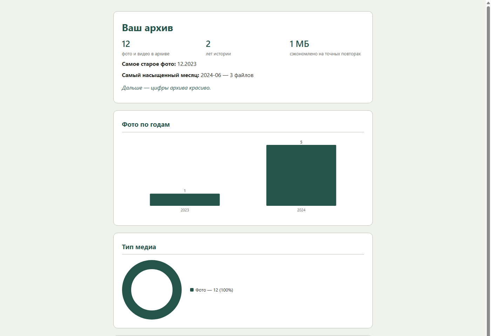

Наведёт порядок в семейных фото и не потеряет ни одного файла — портативная программа для Windows, работает у вас на компьютере, без интернета.
До
После
Как это работает
Три отдельных режима, не обязательная последовательность — можно сразу перейти к третьему, если первые два не нужны. Но для первого раза спокойнее пройти по порядку: ничего не изменится на диске, пока вы сами не согласитесь.
Сколько фото и видео, сколько места они займут — ничего не создаётся и не копируется.
Показывает, каким получится архив на самом деле — тоже ничего не копирует, только показывает.
Копирование начинается только после того, как вы сами согласились — не раньше.
Доверие
Дубликаты — по содержимому файла, похожие кадры — отдельно. Ничего не теряется и не копируется дважды.
Восстановление после сбоя — архив никогда не окажется в наполовину записанном состоянии.
Программа не изменяет, не удаляет, не переносит и не переименовывает исходные файлы — только копирует.
Ни один файл, ни один байт не покидает ваш компьютер — интернет для работы не нужен.
Там, где возможны разные решения, программа выбирает то, что безопаснее для ваших фотографий.
Архив можно удалить и попробовать снова — исходные фотографии не пострадают, из источника ничего не удалялось. Получившийся архив можно даже использовать как источник для нового прогона.
По альбомам и по дате — под ваши папки, программа не навязывает единственный способ. А в журналах всегда видна точная причина, почему файл попал именно туда, куда попал.
Раскладка
Рутину программа берёт на себя, а то, что вы уже организовали сами, — уважает.
После следующего отпуска или праздника достаточно снова запустить программу — она сама найдёт только новые фотографии и сохранит ваш порядок, если он уже есть.
Отчёт
Сколько фото, какой охват по годам, что нашлось повторного — одной страницей, без похода в технические логи.

Пример на синтетических данных — реальный отчёт строится по вашему архиву.
Сколько всего
фото и видео, за какой период, сколько заняло места.
Похожие кадры серийной съёмки
сгруппированы для проверки — ничего не удалено само.
Что стоит проверить
приблизительные и отсутствующие даты видно сразу, не только по логам.
Не требует интернета
Бесплатна и останется бесплатной
Без установки — переносится на флешке
Исходный код открыт — GitHub
Вопросы
Нет. Программа только читает файлы источника — переименовать, переместить или удалить что-либо там она технически не умеет. Оригиналы остаются ровно в том виде, в каком были.
Нет. Вся обработка — на этом же компьютере, ничего никуда не отправляется.
Программа остановится с понятным сообщением, ничего не повредив. Освободите место и запустите ту же команду ещё раз — прогон продолжит с того, что уже дописано, не с начала.
Да, в любой момент — Ctrl+C или просто закрыть окно. Архив устроен так, что недописанный файл не портит уже собранное.
Больше вопросов и ответов — полный FAQ.md.
Исходные фотографии всегда остаются на своих местах.
Свободное место на диске всегда можно увеличить. Лишнюю копию всегда можно удалить. А потерянную семейную фотографию вернуть уже невозможно.
Все решения о вашем семейном архиве принимаете только вы.
Первый шаг ничем не рискует — пункт [1] в меню только смотрит, что найдётся.
Скачать PhotoArchive Бесплатно · портативный .exe · без установки · скачать ZIP-комплектом (тот же exe + документация + пример настроек одним архивом)Способ поддержки пока настраивается. Программа бесплатна в любом случае.